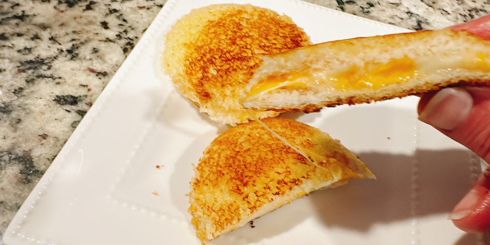

Quick and Simple crustless grilled cheese sandwich that is convenient to make for yourself or for the little ones!
INGREDIENTS
- 8 sliced white sandwich bread : or any bread of your choice
- 4 slices of cheddar cheese
- 2 tablespoons of softened butter : or as much as needed
STEPS
- Spread a thin layer of butter onto 1 side of each bread
- Using a round cookie cutter,press out round slces of chees. Lay 4 slices of bread on a work surface, buttered side down. Place a cheese round in the center of each slice.
- Top with remaining bread slices,buttered side up
- Center a sandwich sealer over a sandwich, press the sealer down and hold it in place to seal the edges, 15-30 seconds
- Pull the crust away from the sealer;discard. Repeat with the remaining sandwiches
- Preheat the air fryer to 280 degrees F, and enjoy